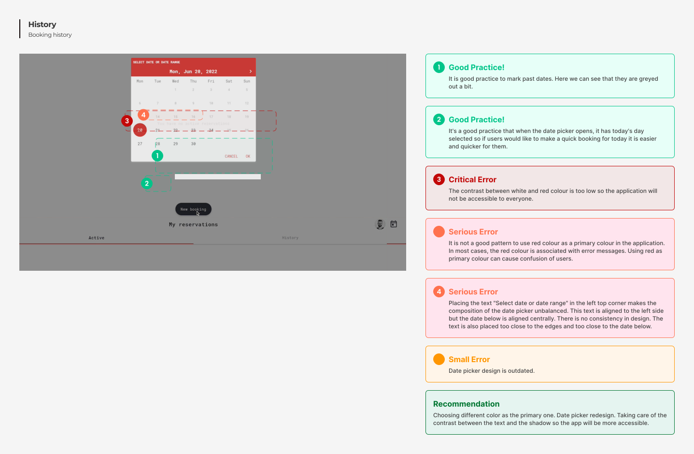

DESKLY APP - UX CASE STUDY
Problem Statement
After the pandemic, more and more employees work from home. They appear in offices only on selected days or only to integrate with the team. Since there is no longer such a demand for office space, companies decide to cut costs and reduce them. Employees in such a situation do not know if they will find a place to work when they come to the office because usually there are fewer places to work than employees.Possible Solution
An application that allows employees to book a desk in the office for a specific day.Project Goal
My goal is to design screens for MVP of the new application for desk booking, taking into consideration observed good practises and problems in an audit of the Odra app (Monterail company desk booking app). The new application will no longer be associated with the Monterail brand, it will be a separate platform and will be dedicated to companies that need a desk booking system. I will try to repeat good practises and avoid mistakes observed during an audit of the Odra app and based on the research (UX Audit, Competitive analysis, and Interviews with users) I will decide what features should be included in the MVP of the desk booking app.Scope of work:
- UX Audit
- Competitive analysis
- Interviews with users
- Deciding what features to include in MVP of app
- Personas
- Information Architecture
- User flow
- Lo-fi wireframes
- Hi-fi wireframes
- Usability tests
Project duration
2 weeks, 8-22 August 2023UX Audit
Odra app is Monterail company desk booking app. I was using it for a year when I was working in Monterail company.
When I have participated in the recruitment process for Monterail company, as a recruitment task, I was supposed to perform a short UX audit of Odra app and design a solution to one of the observed problems.
Link to my solution from 2022
For this project I have decided to conduct full UX Audit of this app (I have learned a lot during this year and now I wanted to make the audit one more time in a more proper way). When designing my application, I have tried to avoid errors and repeat good practises that I found while auditing the Odra app.
For the UX Audit of the Odra App, I have decided to use the Cognitive walkthrough method.
I distinguished the following 4 flows from the application:
- Creating a new booking
- Checking booking history
- Going to My reservations
- Editing existing booking
Based on Jakob Nielsen's 10 Usability Heuristics, I went through each flow and assessed each screen separately as well as entire paths in terms of their logic and consistency. During the evaluation I used a 5-point error rating scale, its legend is below:
Below an example of one screen from my audit.
 Full audit can be seen under the link.To sum up the audit of the Odra app I have chosen good practices which I would like to repeat when designing my app. I have also chosen the biggest mistakes from the Odra app and wrote advice for myself about what I should remember to not repeat those mistakes.
Good practises observed in Odra app which I will try to repeat in my application:

Competitor analysis
I have made the competitors analysis to see what features other desk bookking apps offear and what are their strenghts and weaknesses.

In-depth interviews
I have conducted interviews with 4 users of a desk booking systems. Using the past or current desk booking app was the only criterion that I used while looking for participants for this interview. Through the interviews, I wanted to find out how users make reservations, what habits they have related to this activity, and what features applications they use are offering. I wanted to know also what is important for them in the process of booking a desk and what features in desk booking apps are important for them and which are useless. As I wanted to get precise answers from users I was asking about their last experience with booking the desk.
Below you can see summary of interviews answers.

MVP features
After the research phase, I have decided what features, I will include in the MVP version of my application.
Below are features that I chose for MVP and an explanation of why I chose them.

Proto-Personas
To better understand who the users of my application will be and to be able to identify with them more during the design phase, I decided to create Proto-personas. I call them Proto-personas because they are based on my hypotheses and interviews with users of other desk booking applications.
My Proto-persons will need validation with the market and confirmation of the assumptions after the application release.
I created two Proto-personas because I wanted to create a representative of the direct client of my application - company owners who need a desk booking system, and an indirect client - employees of these companies who will use my application.


Information Architecture
To better organise the content and flow of my application and to understand what screens I need to design I have created Information Architecture.
User flow
To understand better what flows I need to cover I have created user flow.
Sketches
My next step was to prepare quick sketches with my ideas for screens that I needed.
Final UI
Then I transferred my ideas to Figma and below you can see few screens with final UI.


What next?
My next step will be to conduct usability tests with users to check if the application is user-friendly. Then I will summarize the test results and based on them I will improve wireframes.